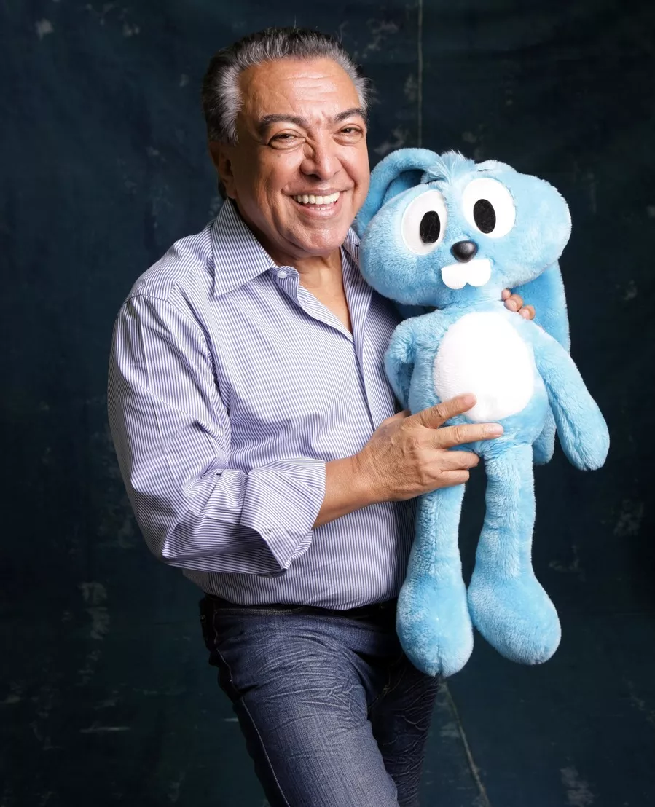

Em "Turma da Mônica", Cebolinha sempre tenta roubar o coelhinho da Mônica, pois ele é obcecado em se tornar o "Dono da Rua", sendo que os pais de Mônica são os "Presidentes" do Bairro, e Cebolinha acha que se derrotar Mônica ele vai se tornar o "dono da rua". No entanto, toda vez que Cebolinha tenta um de seus "planos infaliveis", ele falha e acaba apanhando de Mônica com seu coelhinho. No entanto, Mônica mostra muitas vezes que Cebolinha, apesar de tudo, é seu amigo, sendo até que ela se arrisca a entrar na jaula do tigre para salvar Cebolinha em No Zoológico. Em muitas histórias, Cebolinha e Mônica mostram ser amigos, e eles não brigam, como por exemplo em uma história em que Magali fica com uma melancia presa na boca e Mônica vai direto chamar Cebolinha para ajudar ela. Muita vezes Mônica também chama Cebolinha para se livrar de "bichos nojentos", como baratas, minhocas, etc. E Cebolinha na maioria das vezes se aproveita disso. Mas no final de tudo isso, Mônica e Cebolinha continuam bons amigos como sempre.
Magali e Cascão

A Magali é a personagem mais comilona e bem humorada do Bairro do Limoeiro. Com seu vestido amarelo, vive com fome e acompanha a Mônica nas aventuras, sempre defendendo a amiga de Cebolinha e Cascão. Sua comida preferida no mundo é melancia! Ela também adora brincar com seu gatinho Mingau.

O Cascão é amigo inseparável de Cebolinha e está sempre envolvido nos planos mirabolantes para roubar o Sansão da Mônica. Sua característica mais marcante é que morre de medo de água e por isso nunca toma banho! Ele adora jogar futebol e seu bicho de estimação é um porquinho, chamado Chovinista.
Autor Mauricio
Paulista nascido em Santa Isabel, filho de um casal de poetas, membro da Academia Paulista de Letras e o mais famoso e premiado cartunista brasileiro. Este é Mauricio Araújo de Sousa, mais conhecido por Mauricio de Sousa, o criador dos quadrinhos da Turma da Mônica. O artista conquistou o país em 1959, ano em que seus personagens carismáticos e icônicos estrearam ao público. De lá para cá, as histórias de Mônica, seus amigos e familiares cresce em quantidade e em alcance – há gibis, desenhos, audiobooks e outras formas de mídia.